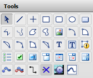
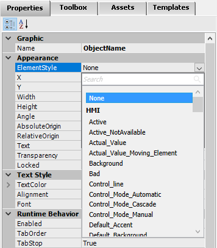
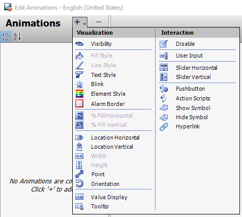

The Graphic Editor provides a comprehensive set of tools for creating and editing industrial graphics. These tools range from basic drawing elements like lines, rectangles, and polygons to advanced components like connection points, connectors, and Windows controls. Beyond simply drawing shapes, you can apply animations to make your graphics respond to live data and user interaction at runtime.
This section describes the element tools and menus available in the Graphic Editor, symbol and graphic element properties, and the two categories of animations — visualization and interaction.
The Tools Pane
Reference: Section 3-69 (Page 207)
The Tools pane is your primary toolbox for creating and editing symbols. It contains a grid of icon-based tools that you can select to draw elements on the drawing canvas. Each tool creates a different type of graphic element.

The Tools pane — a collection of element tools for creating and editing symbols. It includes basic shapes (lines, rectangles, polygons, arcs), a pointer tool for selection, common Windows controls (combo boxes, calendar controls, radio button groups), and a Status element for quality/status conditions. (Section 3-69)
Key Concept — Tools Pane Contents
The Tools pane includes:
Basic shapes: lines, rectangles, polygons, and arcs for drawing process diagrams
Pointer tool: for selecting and moving elements on the drawing canvas
Windows controls: combo boxes, calendar controls, radio button groups, and more
Status element: indicates quality and status conditions of attributes in animated elements
Connection Point: for creating snap points where connectors attach
Connector: for drawing lines between connection points to represent process flow
Tip: Double-clicking an element tool in the Tools pane keeps it active for placing multiple identical elements. After you draw the first element, the tool remains selected so you can draw additional elements without reselecting. Click another tool or press ESC to cancel.
The Elements List
Reference: Section 3-70 (Page 208)
The Elements pane shows a hierarchical list of all graphic elements and embedded symbols on the drawing canvas. This tree-view panel is essential for managing complex symbols with many overlapping elements.
The Elements pane — a tree-view panel listing all graphic elements and embedded symbols by name. The order of items determines the visual stacking (z-order): items at the top of the list appear in front. Elements can be selected from the canvas or from this list, which is especially useful for hidden or overlapping elements. (Section 3-70)
Key Concept — Z-Order and Element Management
The order of items in the Elements list determines which element appears on top when they overlap on the canvas. When adding a new item, it appears at the top of the list by default. You can manually reorder elements, duplicate them, rename them, group them, and edit items within groups. Elements are referenced in animations and scripts using the format <Element name>.Property name — but renaming an element does not automatically update these references.
Pitfall — Renaming Breaks References: If an element, group, or embedded symbol is referenced in an animation or script, renaming it will not update the references automatically. Animations or scripts referencing the old name must be updated manually after renaming.
Edit, Arrangement, and Format Operations
Reference: Section 3-70 to 3-71 (Pages 208–209)
The Graphic Editor provides three categories of operations for working with elements on the canvas:
Edit Operations
Available from the Edit menu and toolbar buttons, these operations help you manage elements during the design process:
Undo/Redo: reverse or reapply your most recent changes
Duplicate: create a copy of the selected element(s)
Cut/Copy/Paste: move or copy elements between locations
Delete: remove selected elements from the canvas
Select All: select every element on the canvas at once
Arrangement Operations
Available from the Arrange menu and toolbar buttons, these operations control the layout and positioning of elements:
Send Forward/Backward: change the stacking order of overlapping elements
Align: align elements to the left, right, top, or bottom of the selection
Rotate/Flip: rotate or mirror elements
Distribute: space elements evenly in horizontal or vertical directions
Same Size: make all selected elements the same dimensions
Group/Ungroup: combine elements into a single group or separate them
Path: create a path graphic from multiple open line elements
Format Operations
Available from the Format menu and toolbar buttons, these operations control the visual appearance of text and lines:
Font settings: configure text font, size, and style
Text alignment: align text within its bounding box
Line settings: configure line weight, pattern, and end styles
Transparency: set the transparency level for elements
Graphic Element Properties
Reference: Section 3-71 (Page 209)
When you select a graphic element on the drawing canvas, its properties appear on the Properties tab, organized into logical categories. The available properties depend on the type of element selected.
Property Category
What It Controls
Graphic
The name of the selected element
Appearance
X/Y location, size, orientation, element style, and other visual attributes
Fill Style
Fill orientation, color, and direction for shapes
Line Style
Line weight and line color
Text Style
Font, text color, and appearance (only for text elements)
Runtime Behavior
Visibility, tab order, and other runtime behaviors
Tip: Different element types have different properties. A text element has text style properties (font, color) but no fill or line style properties. When multiple elements are selected, only their shared/common properties appear on the Properties tab.
The ElementStyle Property
Reference: Section 3-72 (Page 210)
The ElementStyle property, found in the Appearance category of the Properties tab, is a powerful tool for standardizing the appearance of elements across your Galaxy. Applying a style overrides the element's native visual properties — font, fill color, line color, line weight, and transparency — ensuring visual consistency.

Properties panel with the ElementStyle dropdown expanded — styles are organized into categories (HMI, Alarm, Trend, etc.) and can be searched. Selecting a style like "Title" or "Heading" applies a standardized visual appearance to the selected element, overriding its native properties. (Section 3-72)
Key Concept — ElementStyle
To apply an ElementStyle: select element(s) on the canvas or from the Elements list, go to the Properties tab, find the ElementStyle property in the Appearance category, click the dropdown arrow, and select a style. The available styles are based on the active style in the Galaxy. Styles can be predefined (like HMI, Alarm, Trend categories) or user-defined. Using styles ensures visual consistency across all symbols in your Galaxy.
Animations
Reference: Section 3-72 to 3-73 (Pages 210–211)
Animations are the bridge between static graphics and dynamic, interactive displays. They allow graphic elements to respond to live data and user interaction at runtime. Animations can be driven by data from automation objects, element properties, and other data sources.
Key Concept — Two Types of Animations
Visualization animations: Control the visual appearance of an element — blinking, fill style, percent fill, value display, visibility, location, orientation, and more.
Interaction animations: Control the behavior of an element — sliders, user input controls, pushbuttons, action scripts, hyperlinks, and show/hide symbol actions.

The Edit Animations dialog — two columns list all available animation types. The left column shows Visualization animations (Visibility, Fill Style, Blink, % Fill, Location, Value Display, etc.) and the right column shows Interaction animations (Disable, User Input, Slider, Pushbutton, Action Scripts, Show/Hide Symbol, Hyperlink). Click the "+" button to add an animation to the selected element. (Section 3-73)
Visualization Animations
Animation
What It Does
Visibility
Shows or hides the element based on a data condition
Fill Style
Changes the fill color based on a data value or state
Line Style
Changes the line color or weight based on conditions
Text Style
Changes text appearance (color, font) based on conditions
Blink
Makes the element blink at a configurable rate
% Fill Horizontal/Vertical
Fills the element proportionally based on a data value
Location Horizontal/Vertical
Moves the element based on a data value
Orientation
Rotates the element based on a data value
Value Display
Displays a data value as text within the element
Tooltip
Shows a tooltip with information on hover
Interaction Animations
Animation
What It Does
Disable
Enables or disables user interaction based on conditions
User Input
Allows the user to enter a value that writes to an attribute
Slider Horizontal/Vertical
Provides a slider control for adjusting a value
Pushbutton
Makes the element act as a clickable pushbutton
Action Scripts
Executes a script when the element is clicked
Show/Hide Symbol
Shows or hides an embedded symbol on click
Hyperlink
Navigates to a URL or internal resource on click
Tip: Some animations are specific to certain element types. For example, the DataStatus animation is only available for the Status element. A rectangle element that does not contain text will not support the Value Display animation. When selecting multiple elements, only animations supported by all selected element types will be available.
Quiz
Question 1
What happens to the visual stacking order when you add a new element to the canvas?
Click to reveal answer
New elements are listed at the top of the Elements list by default, which means they appear in front of (on top of) all other elements on the canvas. The order can be manually changed using arrangement operations like Send To Back or Bring To Front.
Question 2
Why is it important to be careful when renaming elements that are referenced in animations or scripts?
Click to reveal answer
Renaming an element, group, or embedded symbol does not automatically update references in animations or scripts. If the element is referenced using the format <Element name>.Property name, the old reference will break after renaming. You must manually update all animations and scripts that reference the old name.
Question 3
What is the difference between visualization animations and interaction animations?
Click to reveal answer
Visualization animations control the visual appearance of an element — how it looks at runtime (blinking, color changes, fill levels, value display). Interaction animations control the behavior and functionality of an element — how users can interact with it (sliders, input fields, pushbuttons, hyperlinks, action scripts).
Question 4
What does applying an ElementStyle to a graphic element do to its native properties?
Click to reveal answer
Applying an ElementStyle overrides the native visual properties of the graphic element — including font, fill color, line color, line weight, and transparency. This ensures visual consistency across all symbols in the Galaxy that use the same style. The available styles are determined by the active style configuration in the Galaxy.
Key Takeaways
The Tools pane provides all drawing and editing tools — basic shapes, pointers, Windows controls, connection points, and connectors.
The Elements pane shows the hierarchical list and z-order of all elements; selecting from the list is useful for hidden elements.
Edit, Arrange, and Format operations provide comprehensive element management from the menu and toolbar.
Element properties are organized into categories (Graphic, Appearance, Fill Style, Line Style, Text Style, Runtime Behavior).
The ElementStyle property standardizes appearance across the Galaxy by overriding native properties.
Visualization animations control appearance; interaction animations control user behavior.
Renaming elements does not update animation or script references — manual updates are required.
Source: AVEVA™ Operations Management Interface 2023 Training Manual, Module 3, Section 4 (pages 3-69 to 3-74)